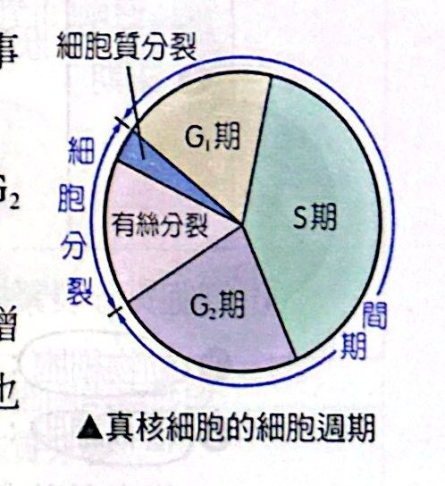
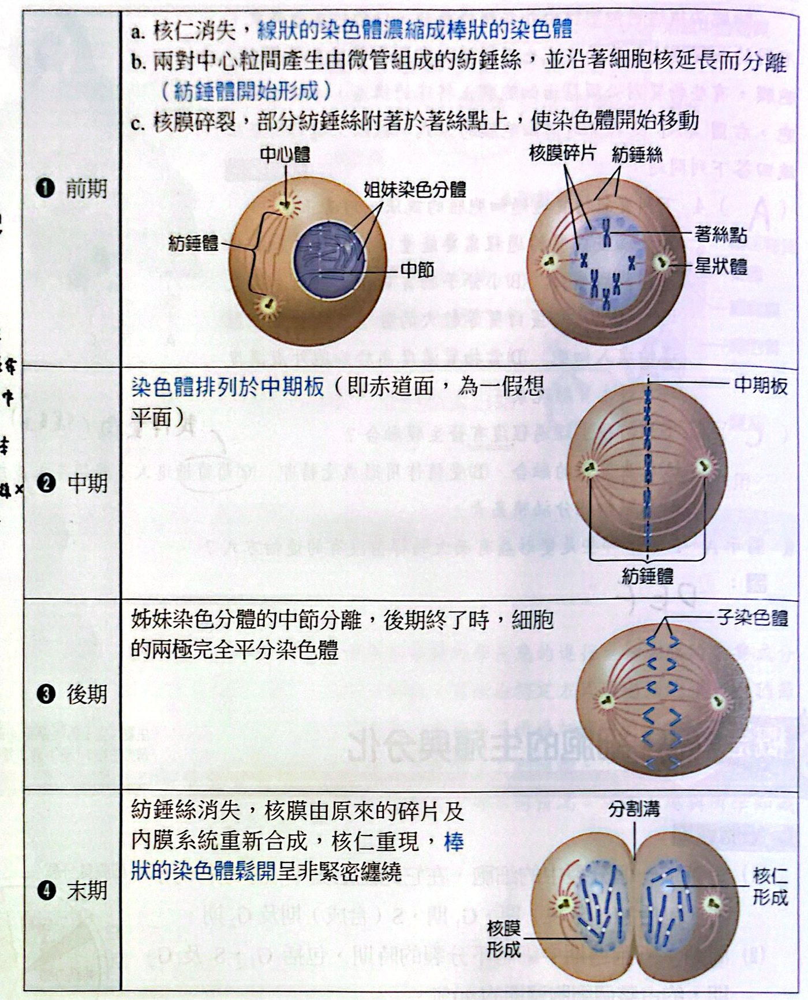
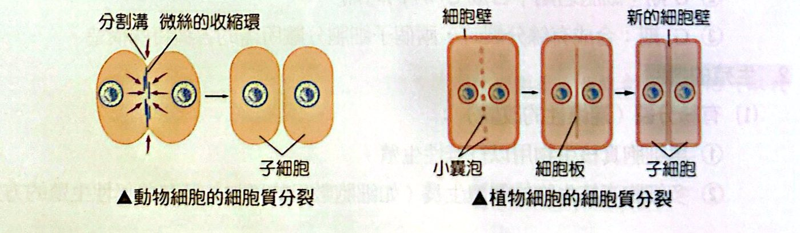
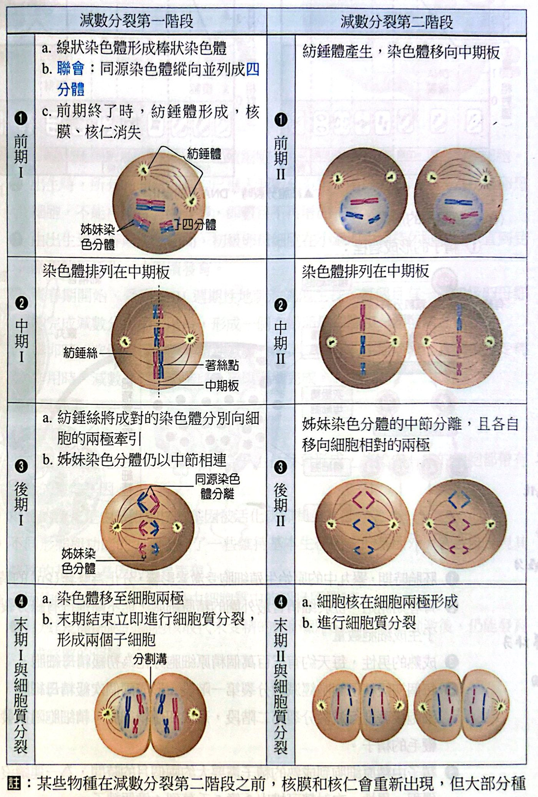
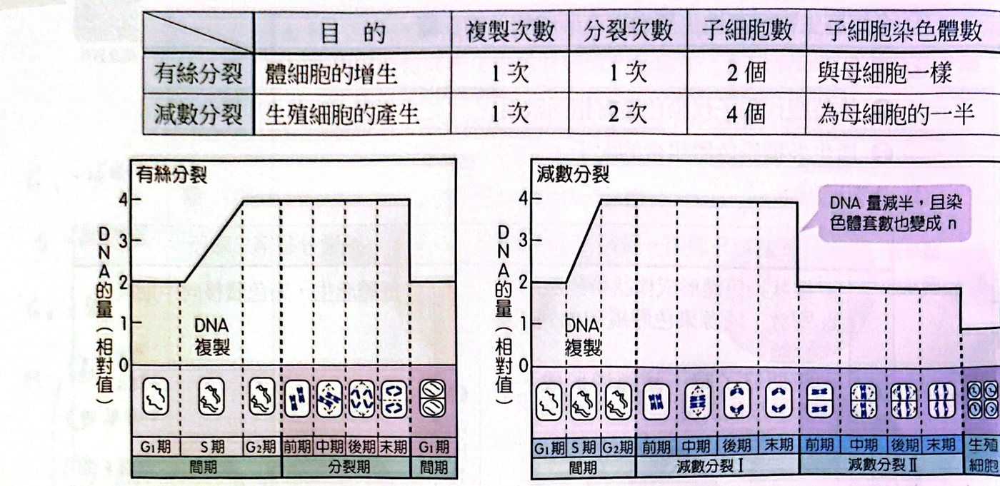
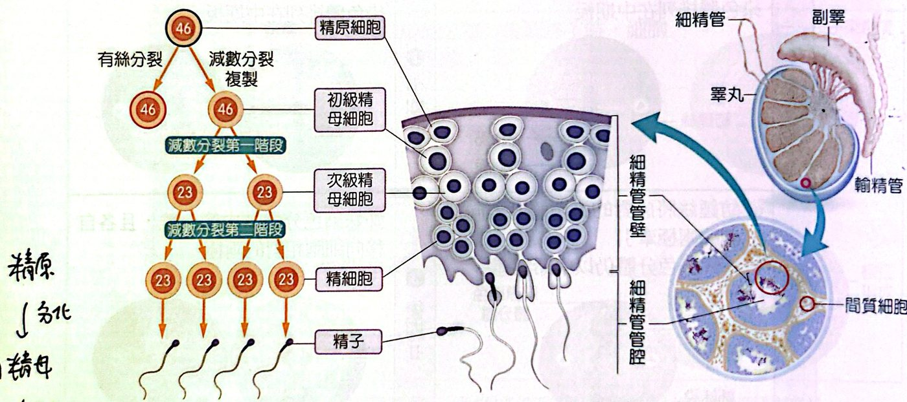
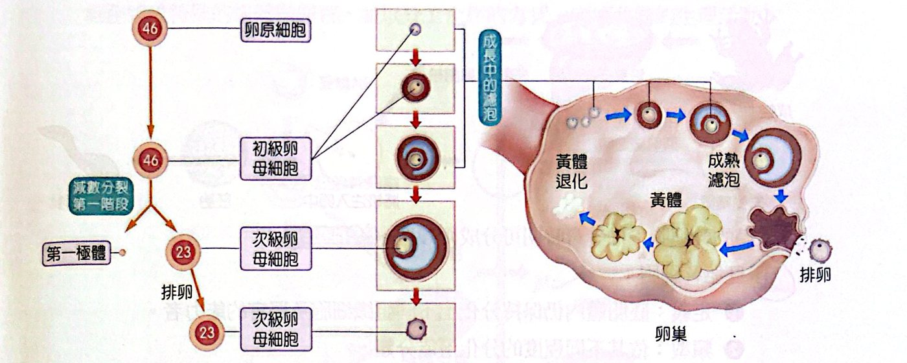
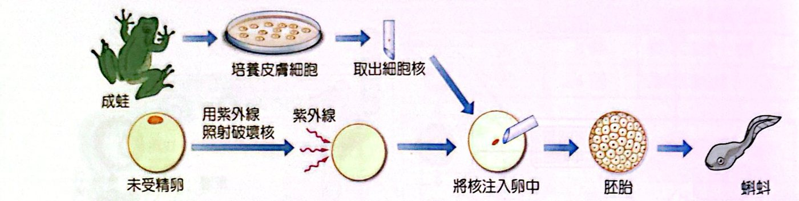
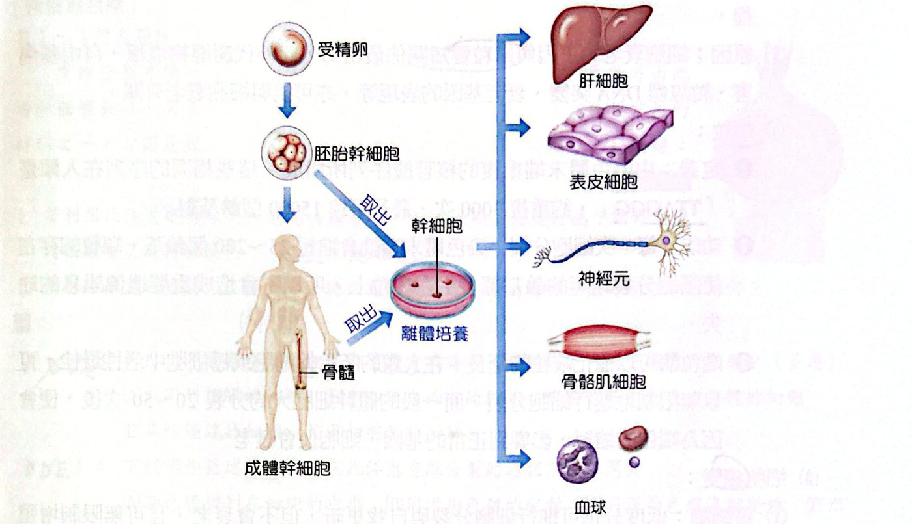
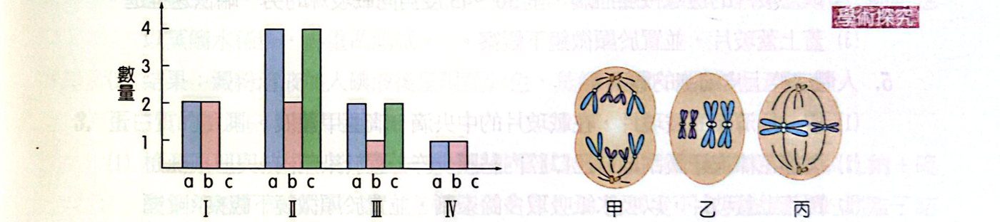

有絲分裂可使一個細胞分裂成兩個相同的子細胞，單細胞生物可由此增加個體數目，而多細胞生物可使個體生長。洋蔥是觀察有絲分裂常用的材料之一（圖為經過一段時間培養後的洋蔥：根在水中長出）。若利用此洋蔥觀察植物細胞的有絲分裂，則取材部位應是何處？該部位用肉眼觀察呈現何種顏色？
看答案與詳解收起
答根尖；乳白色
解
根尖的分生組織細胞持續進入分裂，分裂比例高；肉眼看根尖呈乳白色（綠色葉片或成熟部位分裂比例低）。
細胞週期：一個分裂中的細胞，在它的生活史中依序進行的事件，包括 M（分裂）期、G₁ 期、S（合成）期、G₂ 期。
| 時期 | 重點 |
|---|---|
| 間期＝G₁＋S＋G₂ | 細胞不分裂的時期，約占整個細胞週期的 90%（所以顯微鏡下大部分細胞在間期） |
| G₁ 期 | 細胞內生化活動最旺盛，細胞體積顯著增大，酵素、核糖體、粒線體等構造數目幾乎倍增 |
| S 期 | 合成 DNA（DNA 複製）的時期 |
| G₂ 期 | 合成有絲分裂時，兩個子細胞分離所需的各種特殊構造 |
| M 期 | 有絲分裂（核分裂）＋細胞質分裂 |

用途：單細胞真核生物用來行無性生殖；多細胞真核生物的個體生長（細胞數目增加）及某些無性生殖。一次複製、一次分裂，產生 2 個與母細胞染色體數相同的子細胞。
核分裂過程（記法：前、中、後、末）：
| 時期 | 重點事件 |
|---|---|
| 前期 | 核仁消失；線狀染色體濃縮成棒狀；兩對中心粒間產生由微管組成的紡錘絲，沿細胞核延長而分離（紡錘體開始形成）；核膜碎裂，部分紡錘絲附著於著絲點，使染色體開始移動 |
| 中期 | 染色體排列在中期板（赤道面，假想平面） |
| 後期 | 姊妹染色分體的中節（著絲點）分離，後期終了時細胞兩極完全平分染色體（子染色體） |
| 末期 | 紡錘絲消失；核膜由碎片與內膜系統重新合成；核仁重現；棒狀染色體鬆開，呈非緊密纏繞 |

細胞質分裂緊接在核分裂之後，把細胞分為幾乎相等的兩部分：
- 動物細胞：末期時，中期板處的細胞膜緊縮，表面出現分割溝，分成兩個細胞；
- 植物細胞：末期時，中期板的部分產生細胞板（由高基氏體產生的小囊泡所形成），細胞板邊緣與細胞膜癒合，形成兩個子細胞。

減數分裂：多細胞生物行有性生殖過程中形成配子的步驟。
- 意義：①維持親代和子代染色體數相同；②產生多種染色體組合的配子。
- 一次複製、兩次分裂，產生 4 個子細胞，染色體數為母細胞的一半。
| 減數分裂 I（第一階段） | 減數分裂 II（第二階段） | |
|---|---|---|
| 前期 | 線狀染色體變棒狀；聯會：同源染色體縱向並列成四分體；前期終了核膜、核仁消失，紡錘體形成 | 紡錘體產生，染色體移向中期板 |
| 中期 | 染色體（四分體）排列在中期板 | 染色體排列在中期板 |
| 後期 | 紡錘絲將成對的同源染色體分別向兩極牽引（姊妹染色分體仍以中節相連） | 姊妹染色分體的中節分離，各自移向兩極 |
| 末期 | 染色體移至兩極；立即進行細胞質分裂，形成 2 個子細胞 | 細胞核形成；細胞質分裂 |

| 目的 | 複製次數 | 分裂次數 | 子細胞數 | 子細胞染色體數 | 其他 | |
|---|---|---|---|---|---|---|
| 有絲分裂 | 體細胞的增生 | 1 次 | 1 次 | 2 個 | 與母細胞一樣 | 無聯會 |
| 減數分裂 | 生殖細胞的產生 | 1 次 | 2 次 | 4 個 | 為母細胞的一半 | 有聯會、可互換 |

DNA 量怎麼看圖：間期 S 期 DNA 由 2 增加到 4；有絲分裂結束時回到 2；減數分裂 I 結束降為 2、II 結束降為 1。
精子的形成（睪丸細精管）：
1. 胚胎時，原始生殖細胞分化為雙套（2n）的精原細胞；
2. 青春期後，精原細胞不斷有絲分裂，增加精原細胞數量；
3. 精原細胞分化為初級精母細胞；
4. 初級精母細胞行減數分裂 I → 2 個次級精母細胞 → 減數分裂 II → 4 個精細胞 → 發育成有鞭毛的精子；
5. 精子由精原細胞到成熟約需兩個月，連續進行，一次射精可排出 2 億 5 千萬到 4 億個精子。
卵的形成（卵巢）：
1. 胚胎早期，原始生殖細胞有絲分裂產生 2n 的卵原細胞；
2. 出生時，所有卵原細胞都已進入減數分裂 I 前期，成為初級卵母細胞，不能再有絲分裂（數目不再增加）；
3. 由出生到青春期，初級卵母細胞在小濾泡中休眠；
4. 青春期後受 FSH 週期性刺激濾泡生長，每月一個初級卵母細胞完成減數分裂 I，形成 1 個次級卵母細胞＋1 個極體（細胞質不均等分裂）；
5. 排卵時，次級卵母細胞停在減數分裂 II 的中期，受精時才完成減數分裂 II。


| 精子 | 卵 | |
|---|---|---|
| 一個初級細胞產生 | 4 個精細胞 | 1 個卵＋極體 |
| 細胞質分裂 | 均等 | 不均等（產生極體） |
| 開始時間 | 青春期 | 胚胎期開始、出生時停在減數分裂 I 前期 |
| 持續時間 | 持續製造 | 數目有限，不再增加 |
基因的控制：
- 多細胞生物由一個受精卵（合子）發育而成，所以有核的細胞都帶有全套遺傳基因；
- 細胞特化是因為細胞核的基因被活化或抑制——基因的差異表現；
- 基因的組織特異性表現，是由細胞質中的訊息所控制。蛙的細胞核移植實驗：以蛙皮膚細胞的核取代（用紫外線破壞核的）未受精的蛙卵細胞核，經適當刺激仍能發育成完整個體，證明分化後的細胞核仍保有全套基因。

人體的幹細胞（依發育時期）：
| 類型 | 定義 | 分類 | 例子 |
|---|---|---|---|
| 胚胎幹細胞 | 胚胎中仍保持分化出不同組織細胞與器官的能力 | 全潛能：每個細胞都可發育成完整個體 | 受精卵至 8 個細胞期的胚胎細胞 |
| 富潛能：可發育成各種組織、器官，但不能發育成完整個體 | 受精後第 4 天的部分胚胎細胞 | ||
| 成體幹細胞 | 成體內仍保留一群尚未完全分化的細胞，能不斷分裂增殖並分化；幫助組織更新與受傷修補 | 多潛能：分化出多種功能類似的細胞 | 造血幹細胞→各種血球；神經幹細胞→神經元或神經膠細胞 |
| 單潛能：只能分化出一種細胞（前驅細胞） | 皮膚表皮幹細胞→表皮細胞；心臟幹細胞→心肌細胞 |

| 細胞壞死 | 細胞凋亡 | |
|---|---|---|
| 性質 | 被動死亡：細胞受不可逆傷害 | 主動的程序性死亡：由特定基因調控 |
| 範圍 | 通常是成群細胞集體死亡 | 個別細胞 |
| 過程 | 無基因調控；DNA 無規律碎裂、溶體與細胞膜破裂、內容物外溢，引起發炎 | 細胞萎縮、染色體濃縮斷裂、核皺縮裂解，細胞膜與胞器相對完整，最後崩解成凋亡體，由吞噬細胞吞噬分解，不發炎 |
| 例子 | 燙傷、受傷 | 蝌蚪尾巴消失；胚胎手指間蹼狀組織消失；月經時子宮內膜脫落 |
細胞衰老：隨時間，生理功能逐漸衰退、趨向死亡的不可逆過程。
- 主因：端粒變短（也與代謝廢物堆積、自由基傷害、粒線體 DNA 突變、衰老基因表現有關）；
- 端粒：染色體末端重複的核苷酸序列（人類是 TTAGGG，約重複 3000 次）；每次細胞分裂染色體末端縮短 25～200 個鹼基，端粒的存在使縮短發生在端粒上，不會損失重要遺傳訊息；
- 端粒酶：催化端粒延長，在胚胎幹細胞、癌細胞活性最高，可無限分裂；一般體幹細胞分裂約 20～50 次後，端粒縮短影響到正常基因，細胞衰老。
細胞癌變：
- 癌細胞：低度分化，可分裂與自我更新，但不會衰老，可無限增殖；
- 原因：原致癌基因突變（原本調控細胞週期與凋亡）→ 轉變為致癌基因；抑瘤基因突變（修補 DNA、控制細胞黏著，失去防止累積癌性突變的功能）；感染腫瘤病毒（帶有致癌基因）；
- 引起突變的因子：自發性突變（內在因子，機率極低，每基因約 10⁻⁶）；誘導性突變（外在因子：紫外線、亞硝酸、病毒感染）。
有絲分裂可使一個細胞分裂成兩個相同的子細胞，單細胞生物可由此增加個體數目，而多細胞生物可使個體生長。洋蔥是觀察有絲分裂常用的材料之一（圖為經過一段時間培養後的洋蔥：根在水中長出）。若利用此洋蔥觀察植物細胞的有絲分裂，則取材部位應是何處？該部位用肉眼觀察呈現何種顏色？
根尖的分生組織細胞持續進入分裂，分裂比例高；肉眼看根尖呈乳白色（綠色葉片或成熟部位分裂比例低）。
使用顯微鏡觀察時，發現大部分的細胞最接近細胞週期的哪一個時期？原因為何？
不同步的細胞群中，各期細胞所占比例反映各期持續時間；間期（G₁＋S＋G₂）遠長於 M 期。
利用此洋蔥觀察植物細胞的有絲分裂時，可觀察到下列哪些特徵的細胞？（多選）
(A) 看不到核膜的細胞 (B) 中心粒在兩端的細胞 (C) 染色體排列成四分體的細胞 (D) 具紡錘絲的細胞 (E) 具細胞板的細胞
下列哪些敘述不會出現在此洋蔥有絲分裂的過程？（多選）
(A) 染色體排列在細胞的中央 (B) 同源染色體的配對 (C) 同源染色體濃縮變短 (D) 姊妹染色分體的形成 (E) 同源染色體的基因互換
圖㈠、圖㈡分別表示某二倍體雄性動物（2n＝4）體內細胞正常分裂過程中，不同時期細胞內 DNA 含量、染色分體數和染色體數的關係以及細胞分裂示意圖。圖㈠為柱狀圖，I～IV 四個時期各有 a、b、c 三項（相對值）：I：a＝2、b＝2、c＝0；II：a＝4、b＝2、c＝4；III：a＝2、b＝1、c＝2；IV：a＝1、b＝1、c＝0。圖㈡為甲、乙、丙三個細胞：甲＝有絲分裂後期（兩極各 4 條子染色體，共 8 條）；乙＝4 條複製後的染色體在細胞中；丙＝2 條複製後的染色體排列在赤道面（減數分裂 II 中期）。
圖㈠中，有關 a、b、c 的敘述，下列何者正確？
(A) a 代表染色體數 (B) b 代表染色分體數 (C) c 代表 DNA 含量 (D) a 代表 DNA 含量 (E) c 代表染色體數

關鍵證據：複製時 a 加倍（II 時 a 由 2 變 4）、b 不變 ⇒ a＝DNA 含量、b＝染色體數；c 只在複製後到姊妹分離前出現（I、IV 為 0）⇒ c＝染色分體數。所以只有 (D) 正確。
圖㈡中，有關甲、乙、丙細胞的敘述，下列哪些正確？（多選）（2n＝4）
(A) 甲細胞內含有 4 對染色體 (B) 乙細胞內含有 4 對染色體 (C) 丙細胞內含有 2 對染色體 (D) 乙細胞內含有 2 對染色體 (E) 丙細胞內含有 1 對染色體
2n＝4 的體細胞有 2 對同源染色體。
- 甲：有絲分裂後期，染色體數暫時加倍成 8 條 ⇒ 4 對（A ○）。
- 乙：4 條染色體（複製後，每條有兩條染色分體）⇒ 2 對（D ○，B ✗）。
- 丙：減數分裂 II 中期，只有 2 條染色體，沒有同源染色體成對（C、E ✗）。
圖㈠ I～IV 細胞中，何者存在同源染色體？
同源染色體要看「染色體套數」（柱狀圖 b）：I、II 的 b＝2（二倍體，有同源染色體）；III、IV 的 b＝1（單倍體，已完成減數分裂 I，同源染色體分離）。
圖㈡中丙細胞對應於圖㈠中的哪一個時期？產生的子細胞並成熟後的名稱為何？
丙是減數分裂 II 中期：DNA 2、染色體套數 1、染色分體 2 ⇒ 對應 III。此為雄性動物，減數分裂 II 產生的是精細胞，再發育成精子。